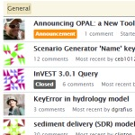

A New Tool for Mitigating Development ImpactsNatCap's latest free and open-source software tool, OPAL, can help countries around the world more efficiently assess the impacts of development projects, and plan mitigations that benefit communities equitably. OPAL is especially useful for conducting rapid assessments of multiple development projects and offset options.Learn more about OPAL and download the tool |
Affecting change on the ground: an interview with Anne Guerry of the Natural Capital ProjectNatCap Chief Strategy Officer and Lead Scientist Anne Guerry sits down to talk bridging the gap between science and practice.Read the article in Leopold Leadership 3.0 |
Stanford collaboration helps governments offset damage caused by development projectsOPAL, a new software tool by NatCap, provides more effective accounting of the ecological impacts from development projects.Read the article in Stanford Report |
Why Conservation Should Embrace a Diversity of People & ValuesHeather Tallis, Lead Scientist at our partner The Nature Conservancy, and 239 co-authors including NatCappers call for inclusive conservation.Read the article in Cool Green Science Read the comment in the journal Nature |
Natural Capital Symposium Registration Now OpenWe have just opened registration for the Natural Capital Symposium, which will take place March 23-25, 2015 on Stanford's campus. Our intention is to continue fostering and supporting the community of practice using natural capital understanding to inform decisions. There will be multiple tracks during our three-day event, focusing on our approach, our science and tools, and the challenges ecosystem services practitioners face in engaging with decision-makers, stakeholders, and the public at large.Learn more about the Natural Capital Symposium and register |
A Tool for Watershed ServicesResource Investment Optimization System (RIOS) is a free and open source software tool that supports the design of cost-effective investments in watershed services. RIOS provides a standardized, science-based approach to watershed management. It combines biophysical, social, and economic data to help users identify the best locations for protection and restoration activities in order to maximize the ecological return on investment, within the bounds of what is socially and politically feasible.Learn more about RIOS and download the tool |
|  | Need help with InVEST, RIOS or OPAL?Have questions about our software or need help with a particular issue? Check out NatCap forums and get assistance from our software team and scientists.Get help on NatCap Forums |